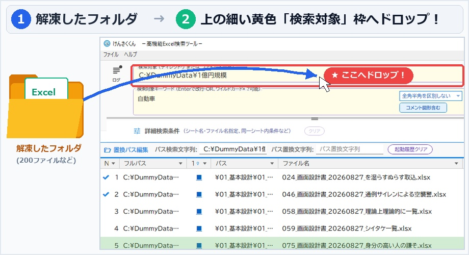
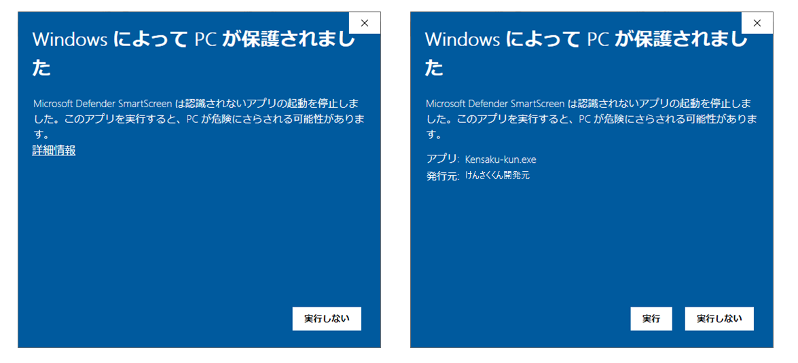

背景色、文字色、取り消し線、図形・コメント内のテキストまで限界再現。システム開発の影響調査から、経理・総務の大規模な帳票照合まで、日々のExcel確認作業を根本から効率化します。
※Microsoft Store・Vectorどちらからでも無償でフル機能をお試しいただけます（初期30日間試用）
ZIPを解凍してフォルダごとドロップするだけで、今すぐけんさくくんの爆速検索をご体感いただけます。

過去の設計書や帳票フォルダから、該当するキーワードを手動のCtrl+Fで1枚ずつめくっていく膨大な時間。
一般的な全文検索ではヒットしにくい、吹き出しや図形、コメント、非表示列に埋もれた重要ワードの見落とし、印刷範囲外や非表示列の除外。
非表示シートや作業用の一時セルまで大量にヒットしてしまい、本当に確認したい項目へ辿り着けない。
途中に開けないファイルが1つ混ざっているだけでツール全体が止まり、どれが原因か探すだけで一苦労。
ただ文字を引っかけるだけでなく、「探した後の確認・レビュー・再利用」を極限まで快適にするための専用設計です。
ヒットしたセルの背景色や文字色、取消線、パターン塗りを一覧上で忠実に再現。セルの意味合いやステータスを画面越しに直感把握できます。
一覧で行を選んで[Enter]を押すだけで実Excelが開き、該当セルへ即座にフォーカス。起動済マーク（✔）も付き、次行へスムーズに作業を進められます。
ヒットしたセルだけでなく、上下左右の周辺セルも含めて構造を保持したままExcelへ再出力可能（RANGE機能）。横断レビューの資料作成が一瞬で完了します。
検索フォルダは15個まで登録可能。フォルダ一覧やファイル一覧を用意して設定すれば、検索したいファイルに限った検索や横断検索も簡単に行えます。
セル単体だけでなく「行全体でのマッチング」、同シート内での複数キーワード必須条件、ワイルドカード検索、コメント・図形内テキストの包含指定に対応。
破損ファイルやパスワード付きExcelがあっても検索プロセスを中断せず安全にスキップ。実行ログから問題のファイルやフォルダを直接開いて確認できます。
| 対応OS | Windows 10 / Windows 11（64bit環境推奨） |
|---|---|
| ランタイム依存 | なし（インストール不要・事前準備なし。ZIPを解凍して .exe をダブルクリックするだけで即起動。※.NET 10ランタイム同梱の自己完結型EXE） |
| 対象ファイル形式 | Microsoft Excel 形式 (.xlsx, .xlsm などの OpenXML 準拠ブック) |
| 導入方法 | インストーラー不要。ZIPを解凍して実行ファイル（Kensaku-kun.exe）を起動するだけで動作します。レジストリも汚しません。 |
「まずは現場のExcelで試す」ことができるよう、同一のアーカイブでそのまま試用可能です。
ダウンロードしたアーカイブは、初回起動から30日間フル機能をお試しいただけます。
💡 試用期間終了後の動作について
試用期間が終了しても、検索機能自体のロックや強制終了は行いません。引き続き検索はお使いいただけますが、以下の軽微な制限・通知が入ります：
業務利用、およびすべての案内表示・透かしの解除に対応する買い切りライセンスです。（※Store版はアプリ内から、Vector版はシリアルキーにて購入・登録いただけます）
「けんさくくん」はZIP解凍ですぐに起動できます。
まずはテスト時に利用した大量のテストExcelを検索対象にドラッグして、その一覧性と連携感を体感してください。
Windows 10 / 11 対応 ｜ .NET 10 梱包済（単体起動） ｜ 64bit
▼ 動作検証用 サンプルExcelデータセット
※ サンプルExcelは、パブリックドメイン英和辞書『ejdict-hand』（くじらはんど様）と生成AIを活用して作成した架空のテストデータです。
本ツールは正規のコードサイニング証明書（Certum認証）による電子署名を行っており、プログラムの完全性と安全性が保証されています。
※新規バージョンの公開直後はMicrosoftによる利用実績（レピュテーション）の蓄積前のため、初回起動時に青い警告画面が表示される場合があります。

【画面】左：①「詳細情報」をクリック ➜ 右：②「実行」をクリック（クリックで拡大）